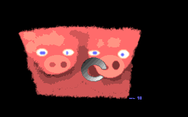

< Warp
![[ Warp ]](../../members/warp.jpg)
< Warp |
|
|
30min.tar.gz (183kb) |  |
| Warp's entry for a 30 minute pixel compo on ircnet. The theme of the compo was something with pigs and tits :). The tarball contains all entries and results. |
|
edir_05_.zip (4kb) enterdir.zip (3kb) |
|
<---+
ENTERDiR v0.5ß
REQUiRES 4 Dos
|
| fls_163_.zip (5kb) |
· F · L · Y · i · N · G ·
##### ### # # ### ### ###
# # # # # # # # #
##### ### # # # ## ##
# # # # # # # # #
##### # # ### ### ### # #
|FLYiNG SAUCER describes|
|your SAUCEd ANS and RiP|
|files, all popular song|
|formats and also a lot|
|of unknown modules and|
|samples. 4 Dos required|
| - -- --+-- -- - |
|FLS v1.63ß by Warp^TMT|
|
| tmt-l4g.zip (9kb) | Loudness 4 GUS 1.02 by Thaumaturge +--------------------------------+ |############################----| |###################-------------| +--------------------------------+ | Output # ¦ Line # ¦ Mic - | +--------------------------------+ L4G is a tool to change the in/out lines and the "master" volume on a Gravis Ultrasound. Requires v3.7f+ ---------------------------------- Includes complete programming info about changing the GUS volumes !!! ---------------------------------- |